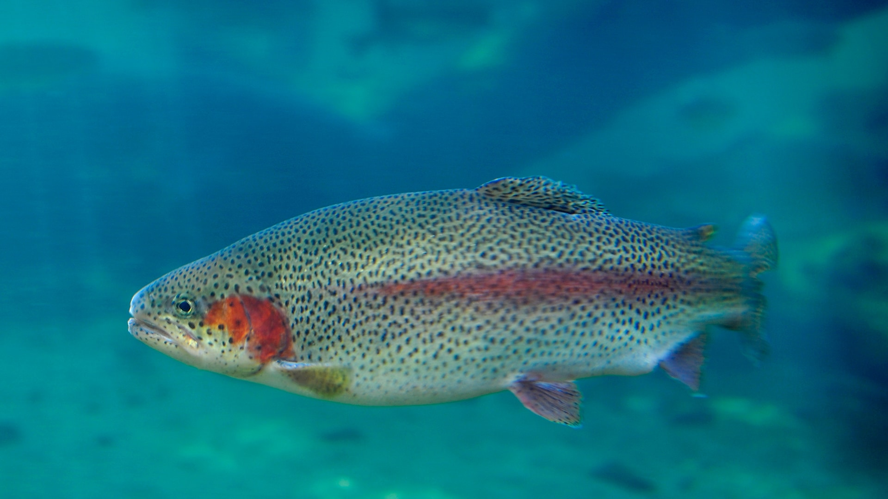
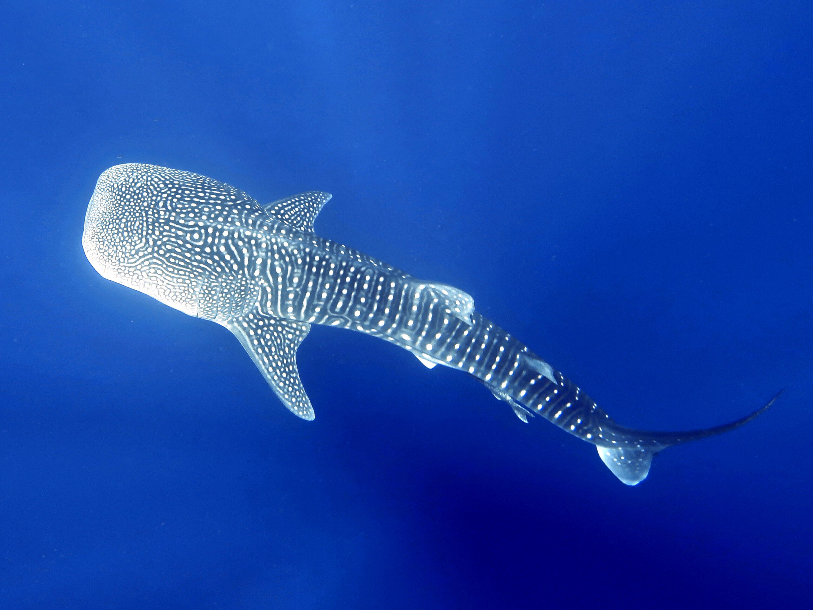

About
Hier finden sie eine kleine Bildergalerie und Informationen zu einigen Tieren.

Regenbogenforelle
Die Regenbogenforelle ist eine der bekanntesten Forellenarten. Sie ist für ihr fleischreiches, zartes Fleisch
und ihre bunten Farben bekannt. Sie kommt in klaren, kalten Flüssen und Seen in Nordamerika vor.
- -Große Artenvielfalt
- -Lebt in kalten, klaren Gewässern
- -Bekannt für ihr zartes Fleisch und ihre bunten Farben

Weisser Hai
Der Weiße Hai ist der größte Raubfisch in den Ozeanen und kann bis zu 6 Meter lang werden.
Weiße Haie haben eine der höchsten Bisskräfte im Tierreich und können ihre Beute mit einem Biss töten oder
schwer verletzen.
Trotz ihres gefährlichen Rufs greifen Weiße Haie selten Menschen an und bevorzugen stattdessen Robben, Seelöwen
und andere Meerestiere.
- -Riecht Blut auf weite Distanz
- -Der Weiße Hai gehört zur Familie der Makrelenhaie und hat eine glatte, grau-braune Haut, die für seine
Tarnung im Wasser sorgt.
- -Seine Zähne werden gerne als Schmuck benutzt.

Walhai
Der Weiße Walhai ist der größte Fisch der Welt und kann bis zu 12 Meter lang werden.
Trotz ihrer beeindruckenden Größe ernähren sich Weiße Walhaie hauptsächlich von Plankton und kleinen Fischen.
Weiße Walhaie sind sanfte Riesen und sind bekannt dafür, friedliche Begegnungen mit Tauchern und Schnorchlern zu
haben.
- -Der Weiße Walhai hat ein einzigartiges Aussehen mit seinen markanten weißen Punkten auf der Oberseite und
seinen grauen Streifen auf der Unterseite.
- -Weiße Walhaie sind langsame Schwimmer und können in der Regel Geschwindigkeiten von nur 5 km/h erreichen.
- -Der Weiße Walhai hat eine Lebensdauer von bis zu 70 Jahren und kann in den meisten Ozeanen weltweit
gefunden werden.

Clownfisch
Der Weiße Clownfisch ist ein kleiner, lebhafter Fisch, der in den Korallenriffen des Pazifiks und des Indischen
Ozeans beheimatet ist.
Weiße Clownfische sind berühmt für ihre symbiotische Beziehung mit Anemonen und nutzen diese als Schutz vor
Raubtieren.
Anders als andere Clownfisch-Arten ist der Weiße Clownfisch kein enger Partner von nur einer Anemonenart,
sondern kann mit mehreren Arten interagieren.
- -Der Weiße Clownfisch hat ein charakteristisches Aussehen mit seiner weißen Körperfärbung und seinen
orangefarbenen Flossen.
- -Weiße Clownfische sind sehr territorial und verteidigen ihr Anemonen-Zuhause gegen Eindringlinge.
- -Die Fortpflanzung von Weißen Clownfischen ist einzigartig, da sie sich in einer hierarchischen Gruppe
organisieren, in der ein Weibchen dominant ist und sich in ein Männchen verwandelt, wenn das dominante
Weibchen stirbt.